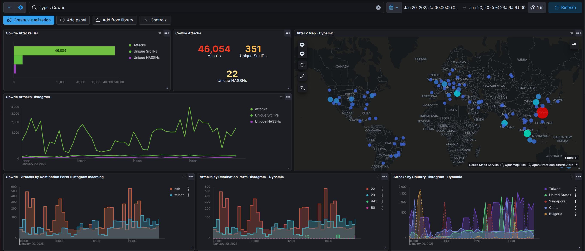
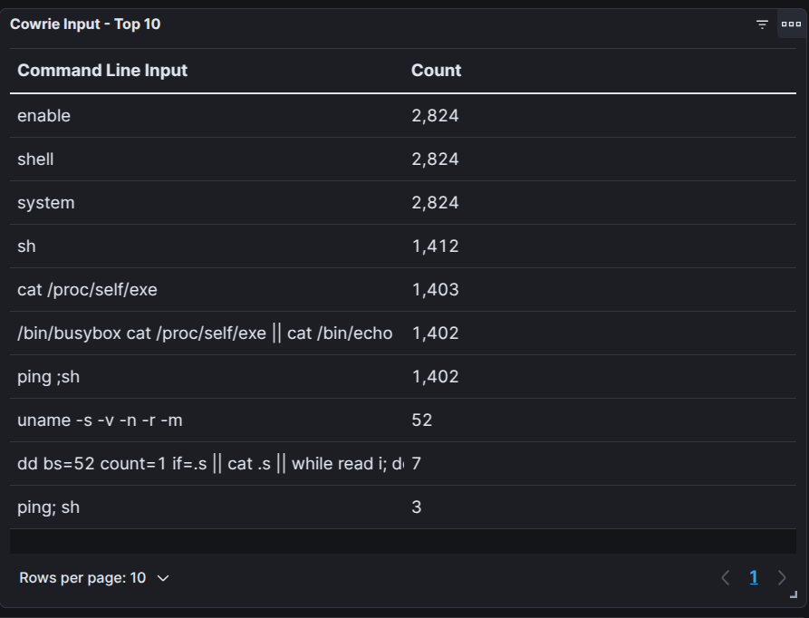

Analyzing Some Cowrie Logs (1/21/2025)
Cowrie is an SSH/Telnet honeypot designed to log brute force attacks and shell interactions performed by the attacker. Let's look deeper into the Cowrie Logs.
I had setup an instance of T-Pot for some time and I isolated the events to a 24 hour time window for January 20th 2025. Below, we can see that Cowrie captured traffic from 351 Unique Sources.
The Cowrie dashboard allows us to easily discover the common commands that attackers have used. Below, we can see the some of the commands used and their frequency during the previously mentioned timeframe.

The commands captured by the Cowrie honeypot logs provide valuable insights into the behavior of attackers.
Commands such as
enable, shell, and system,
suggest attempts to escalate privileges or interact more directly with the underlying system.
Similarly, the command
sh and ping ;sh
indicate efforts to invoke a shell for executing further commands. The frequent use of
cat /proc/self/exe and
(/bin/busybox cat /proc/self/exe || cat /bin/echo)
reflects attempts to interact with or replicate the running process,
possibly as part of malware deployment or reconnaissance.
Additionally, the use of
uname -s -v -n -r -m
demonstrates efforts to gather detailed system information,
such as the kernel version and architecture, to tailor future actions.
More advanced commands, like
dd bs=52 count=1 if=.s || cat .s || while read i; d,
show attempts to process or manipulate data in complex ways.
These patterns collectively highlight a mix of different techniques
all aimed at exploiting vulnerabilities in the system.
Attackers often use automated scripts or bots to probe and exploit systems.
These scripts may run a standard sequence of commands repeatedly across multiple targets.
For example, the equal count of 2,824 for the commands
enable, shell, and system
likely indicates that these commands were part of a repeated automated process or script.
From this example, we can see that automated tools and bots remain a prevalent threat,
using standardized command sequences to exploit common vulnerabilities across multiple targets.